This project is an extension of Project 3-1, where we implemented new textures to apply to mesh, as well as camera effects to render images with depth (Parts 1 and 4). For Part 1, we created glass/mirror material using reflection and refraction properties to create mirror and glass textures. From there, we implemented Depth of Field in Part 4, which uses a thin lense camera model to focus certain objects in the scene. This project was super interesting, and we really enjoyed exploring the ways in which material can be implemented from natural phenomena to create texures in such a realistic way. We are both taking UCBUGG this semster, and it was really interesting learning about the actual implementation of these textures that we use for our animation, since we are using Pixar surface textures for many of our assets and characters! We will definitely be completely the rest of these tasks once the semester ends!
In this part, we implememted mirror and glass textures. We first implemented a reflect function, BSDF::reflect, which takes
in a vector and returns its reflection about the normal, (0, 0, 1). From there, we were able to implement the mirror material by calling our helper reflect
function into MirrorBSDF::sample_f(), which returns the reflected vector divided by the absolute value of the cosine of the normal vector.
From there, we implemented the refraction functions necessary for the glass texture. Since our BSDF calculations are in a canonical "object coordinate frame,
we can rely on spherical Snell's equations to calculate the refraction. We implemented BSDF::refract(), which takes an input vector and assigns the
output vector to the refraction vector. The function outputs a boolean that tells us whether or not the resulting vector outputs a valid refraction. Refraction
only happens when:
| 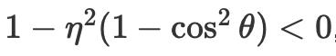 |
If this case is satisfied, then there is total internal reflection, and thus, the function will return false and will not assign the output vector. In the
equation above, η is calculated based on
| 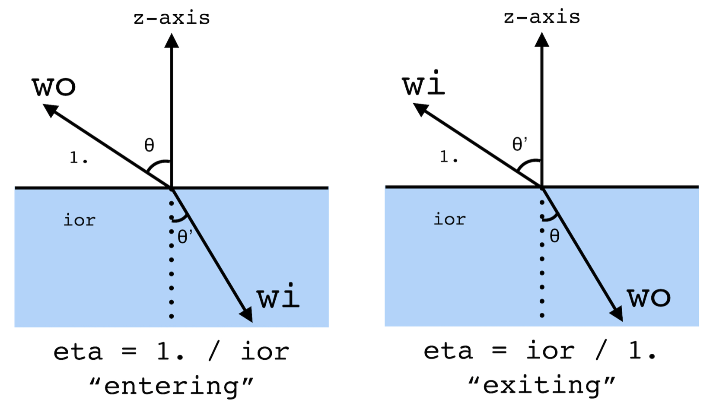 |
After implementing refraction and reflection, we were able to render beautiful images. Below, we see that CBDragon.dae is able to reflect brilliantly.
|
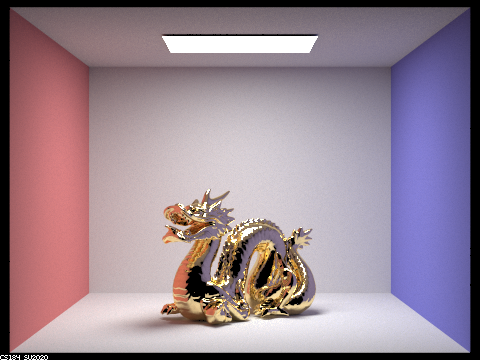
|
After completing relfection and refraction, we were able to render beautiful photos of reflective surfaces. In order to progress to glass material, we implemented
GlassBSDF::sample_f(). For this function, if there is total internal reflection, we calculate the reflection of the vector and return its reflectance divided by the cosine of the
vector. If there is no total internal reflection, that means that both reflection and refraction occur. In this case, we can use Schlick's approximation to calculate
the of the reflection energy to the refraction energy. This ration will help us determine if we should return a reflection ray or a refration ray, since GlassBSDF::sample_f() only returns
one ray direction. Thus, we used a coin_flip function with the Schlick coefficient, R, to randomly determine whether the ray will be reflected or refracted.
| 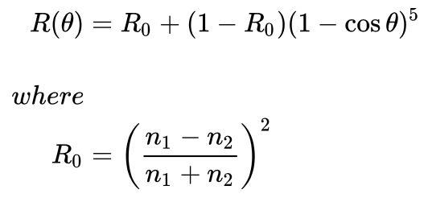 |
If the coin flip returned true, we calculated the reflection of the vector and returned R * reflectance / (cosine of the vector). Otherwise, we
calculated the refraction of the vector and returned (1-R) * transmittance / (cosine of the vector) / η^2. After completing this function, we were able to render
beautiful images with mirror and glass texture. Below is the rendered image of CBLucy.dae with the glass material!
| 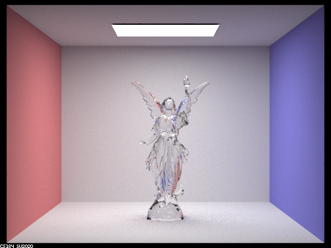 |
We rendered many images of CBspheres.dae to compare different max_ray_depth levels. The levels range from 0, 1, 2, 3, 4, 5, and 100, and we rendered with 2048 samples per pixel with 4 samples per light. We compared the different multibounce effects that appear in each image and how these effects were influenced by the max_ray_depth.
|
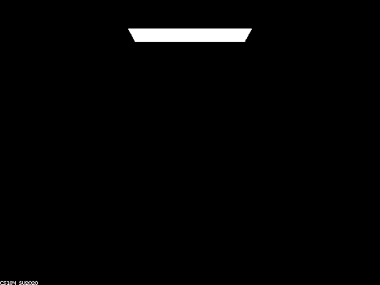
|
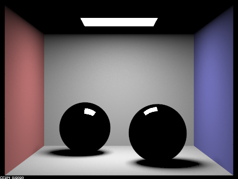
|
|
|
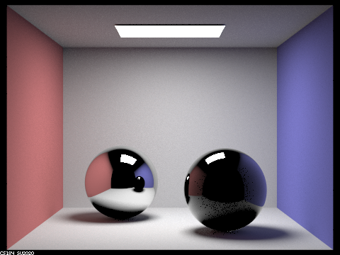
|
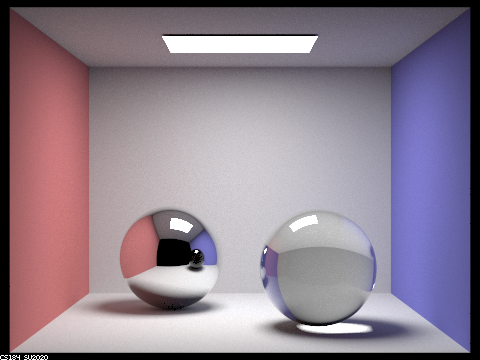
|
|
|
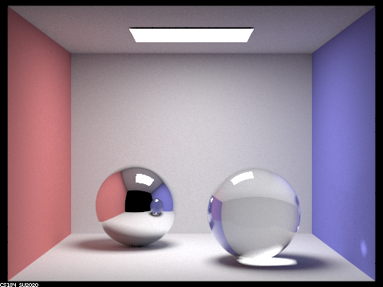
|
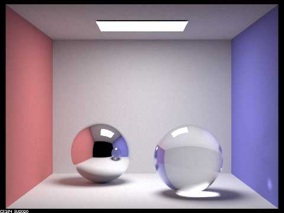
|
|
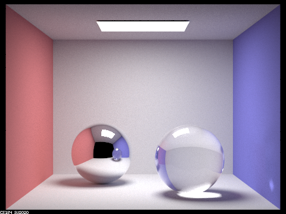
|
For this assignment, Ryan completed part 4 while Natalie completed part 1. We were able to work well together, and were able to work on parts that were interesting to both of us, while still collaborating on the project together.